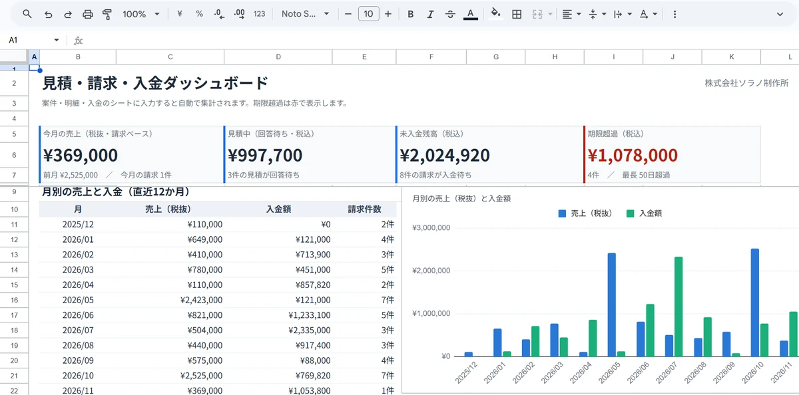
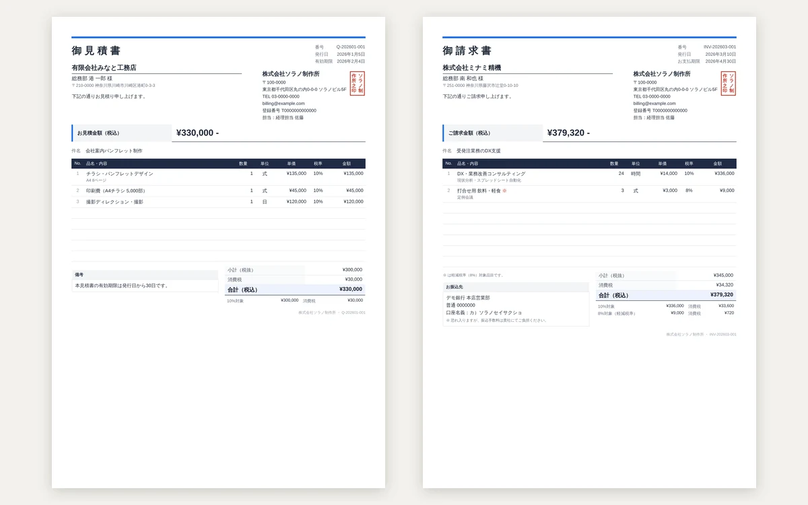

見積・請求・入金管理
いつもの Google スプレッドシートのまま、見積から入金確認までを自動化する業務ツールです。
- Client
- 請求書を自社で発行する中小企業・個人事業主（制作会社・コンサル・工務店など）
- Users
- 経理・営業事務の担当者
（Google スプレッドシート） - Platform
- Google スプレッドシート＋
Google Apps Script

Overview
プロジェクト概要
顧客・商品のマスタ、売上の入力、見積書・請求書の PDF 作成、Google ドライブへの保存、メールの下書き、入金の管理、未入金のアラート、売上のダッシュボードまでを、Google スプレッドシート1つで行える業務自動化ツールです。
新しいシステムを導入しなくても、普段使っているスプレッドシートのメニューから操作できるようにしました。DX の最初の一歩として、Excel の手作業をそのまま置き換えられることを目指しています。
Problem
想定した業務課題
- Excel のひな形に顧客名や明細を毎回書き写して、見積書・請求書を作っている
- PDF の保存先やファイル名がバラバラで、過去の書類を探すのに時間がかかる
- 請求書をメールで送る準備（宛名・本文・添付）が毎回の手作業になっている
- 入金の確認を通帳と見比べて行い、支払期限を過ぎた請求に気づくのが遅れる
- 月別・顧客別の売上を出すために、月末に集計し直している
Solution
解決方法
- 案件で顧客を、明細で商品を選ぶだけで、単価・税率・金額・消費税・合計が自動で入ります。
- 見積書・請求書はボタン1つで番号を振って PDF にし、「請求書 › 2026-11」のように月別のフォルダへ自動で保存します。
- PDF を添付した Gmail の下書きを自動で作ります。送信はせず、担当者が確認してから送る運用です。
- 支払期限は顧客ごとの支払条件（月末締め翌月末払い など）から自動で計算し、期限を過ぎた請求は赤で表示して、督促メールの下書きもまとめて作れます。
- ダッシュボードで、今月の売上・未入金残高・期限超過と、月別・顧客別の売上を自動で集計します。
Impact
導入効果の試算
従業員10名ほどで、月に見積20件・請求30件を発行する会社を想定した試算です。作業ごとの時間と、人件費の時間単価 2,500円（経理・事務担当）は、このページで置いた想定です。
- 削減できる作業時間
- 月 18時間月 24時間 → 月 6時間
- 年間の削減時間
- 216時間月 18時間 × 12か月
- 人件費に換算すると
- 約54万円 / 年月 約4.5万円（時間単価 2,500円）
| 作業（1か月あたり） | 導入前 | 導入後 | 削減 |
|---|---|---|---|
| 見積書・請求書の作成と保存Excel に転記して PDF 化・保存 → 行を選んでボタン1つ | 10時間 | 2時間 | −8時間 |
| 送付メールの準備宛名・本文・添付を毎回用意 → PDF 付きの下書きを自動作成 | 3時間 | 1時間 | −2時間 |
| 入金の確認と督促通帳と一覧を見比べる → 入金を記録すると状況が自動で変わり、期限超過を自動で表示 | 6時間 | 2時間 | −4時間 |
| 月次の売上集計月末に集計し直す → ダッシュボードで常に最新 | 5時間 | 1時間 | −4時間 |
| 合計 | 24時間 | 6時間 | −18時間 |
※ 実際の導入実績ではなく、上の想定条件にもとづく試算です。実際の効果は、業務の内容や運用によって変わります。
Features
主要機能
- マスタ・売上入力
- 顧客（支払条件6種）と商品（税率10%・軽減税率8%）のマスタ。商品を選ぶと単位・単価・税率が自動で入り、金額と消費税は自動計算。
- 見積書・請求書の PDF
- 番号を自動で採番し、支払期限を自動計算。インボイス制度の記載事項（登録番号・税率ごとの合計と消費税）に対応。
- ドライブ保存・メール下書き
- 月別フォルダへ自動保存。PDF を添付した見積・請求・督促メールを Gmail の下書きに作成（自動送信はしない）。
- 入金管理・未入金アラート
- 分割入金にも対応し、未入金・一部入金・入金済・期限超過を自動判定。開いたときの通知、毎朝の自動チェック。
- ダッシュボード
- 今月の売上・見積中・未入金残高・期限超過の指標と、月別の売上と入金、顧客別の売上ランキング。
- 操作パネル・セルフテスト
- サイドバーから PDF 作成・下書き・入金記録をボタンで操作。シートの数式とプログラムの計算が一致するかを14項目で自己診断。
Screens
スクリーンショット

Tech
使用技術
- Google スプレッドシート
- Google Apps Script（V8）
- clasp
- Google ドライブ・Gmail（下書き）
- HtmlService（PDF 生成・操作パネル）
- Node.js（node:test）
- Playwright
- シートは数式で即時に計算し、PDF に載せる金額はプログラム側で計算します。セルフテストで両方が一致するかを照合し、実機で見つけた集計の不具合もこの仕組みで発見しました。
- 消費税は、インボイス制度に合わせて税率ごとに1回だけ端数を処理し、浮動小数の誤差が出ないよう整数で計算しています。
- 顧客へのメールは自動送信せず、下書きまでにとどめています。業務ロジックは Google のサービスに依存しない関数に分け、Node.js で単体テストと通しテストを行っています。
Links
ソースコード
clasp を使うと、デモデータ入りのスプレッドシートをご自身の Google アカウントに作成できます（手順は GitHub の docs/SETUP.md）。デモの会社・顧客はすべて架空で、顧客のメールアドレスは届かない予約ドメインにしています。